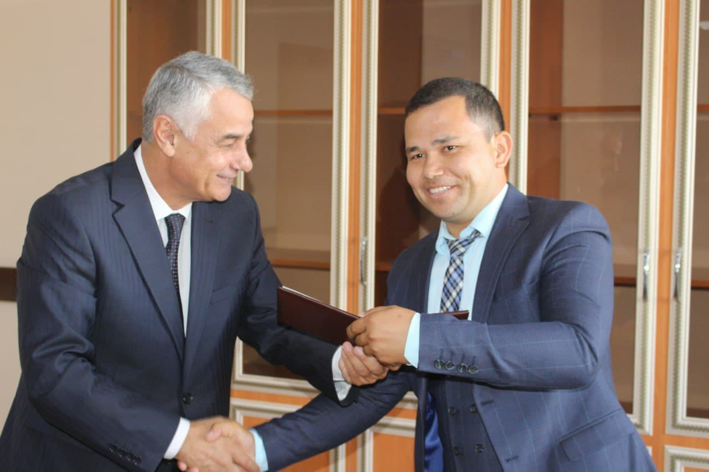
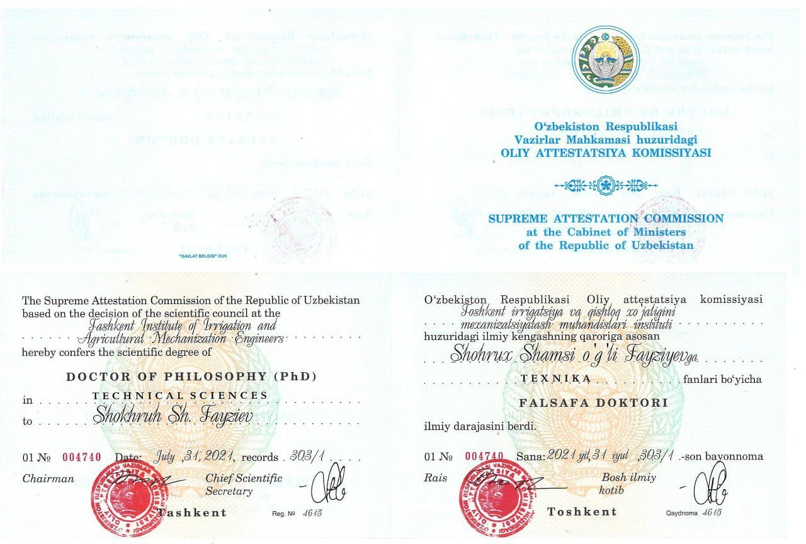

Bo`limlar
Menyu
Ortga
Mualliflar
 
Fayziyev Shohrux Shamsi o`g`li
Qarshi muhandislik iqtisodiyot instituti va Toshkent irrigatsiya va qishloq xo`jaligini mexanizatisyalash muhandislari instituti Qarshi filali, texnika fanlari nomzodi Falsafa doktori.